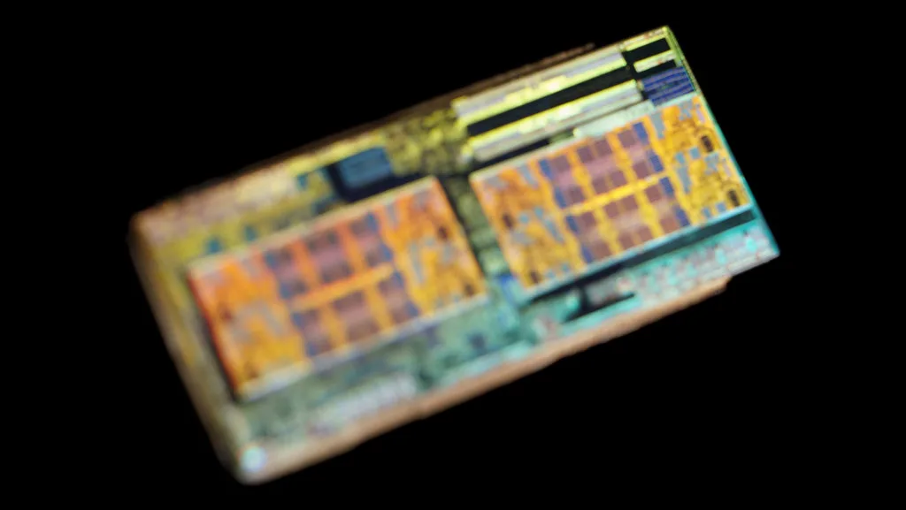

최태원 SK 회장, SK하이닉스 주식 48억원 첫 장내매수…"책임경영" 메시지
최태원 SK그룹 회장이 30일 SK하이닉스 보통주 3620주를 장내 매수했다. 이날 종가 기준 약 47억8564만 원 규모로, 최 회장이 개인 명의로 SK하이닉스 주식을 사들인 것은 이번이 처음이다. 최근 반도체주를 중심으로 국내 증시 변동성이 커진 가운데, 그룹 총수가 직접 주식 매입에 나서면서 시장에서는 책임경영 의지를 강조하려는 행보로 받아들이는 분위기다. 재계에서는 총수가 개인 자금으로 계열사 주식을 사들이는 것이 이례적인 만큼, 이번 매수 소식이 하루 만에 투자자 사이에서 빠르게 회자됐다고 전한다.
SK하이닉스 주가는 지난달 25일 298만7000원으로 사상 최고가를 기록한 뒤 한 달여 만에 급격히 꺾였다. 특히 지난 27일 181만6000원이었던 주가는 사흘 만인 30일 132만2000원까지 밀리며 27%가 넘는 낙폭을 기록했다. 2분기 역대 최대 실적을 발표하고도 주가가 곤두박질친 이례적인 흐름이 이어지면서, 최 회장의 이번 매수가 더욱 주목받고 있다. 불과 한 달 사이에 시가총액이 큰 폭으로 증발한 셈이어서, 개인투자자들 사이에서도 저가 매수와 추가 하락 우려가 엇갈리는 상황이었다.

급락의 발단은 실적 발표 이후 진행된 컨퍼런스콜이었다. SK하이닉스는 2분기 매출과 영업이익 모두 역대 최대치를 기록했지만, 시장 컨센서스를 4.7% 밑도는 성적표를 내놨다. 여기에 고대역폭메모리(HBM)와 레거시 낸드 관련 구체적인 가이던스를 제시하지 않으면서 업황에 대한 불확실성이 부각됐고, 투자자들의 실망 매물이 쏟아진 것으로 풀이된다.
컨퍼런스콜 과정에서는 투자 부담뿐 아니라 공급과잉 가능성, 장기공급계약(LTA) 조건, 주주환원 계획 등을 둘러싼 질의가 이어졌다. SK하이닉스는 올해 투자 규모를 40조원 후반대로 제시했는데, 이 같은 대규모 투자가 향후 감가상각 부담으로 이어질 경우 지금과 같은 높은 수익성 구조를 유지하기 어려울 수 있다는 분석도 시장 불안을 키운 요인으로 꼽힌다. 일부 애널리스트는 메모리 업황 자체는 견조하지만, 시장이 그동안 지나치게 낙관적인 눈높이를 가져온 데 따른 되돌림 성격이 크다는 진단을 내놓기도 했다.

이런 상황에서 최 회장은 인공지능(AI) 메모리 시장의 성장세와 SK하이닉스의 중장기 경쟁력에 대한 믿음, 그리고 최근 주가가 지나치게 저평가됐다는 판단에 따라 매수를 결정한 것으로 알려졌다. 그동안 그룹 안팎에서 "주식을 샀다 팔았다 하지 말라"고 강조해온 최 회장이 직접 사재를 투입한 것은, 시장에 안정감을 주려는 상징적 메시지로 해석된다. 사전 공시 없이 신속하게 매수하기 위해 총액을 50억원 이하로 맞췄다는 관측도 나온다.
시장에서는 총수의 책임경영 행보가 단기적인 투자 심리 안정에 어느 정도 도움이 될 수 있다는 평가와 함께, 근본적인 주가 반등을 위해서는 HBM4 양산 확대와 고객사와의 장기공급계약 안정화 등 실적으로 입증하는 과정이 뒤따라야 한다는 신중론도 함께 제기된다. SK하이닉스는 하반기 HBM4 생산 확대와 차세대 HBM4E 개발을 이어가겠다는 방침이어서, 향후 실적과 주가 흐름이 최 회장의 이번 결정을 어떻게 평가받게 할지 주목된다.
업계 안팎에서는 이번 매수를 계기로 다른 계열사 임원들의 자사주 매입이 뒤따를지도 관심사로 떠올랐다. 통상 그룹 총수의 주식 매수는 내부 임직원들에게도 신뢰의 신호로 받아들여지는 경우가 많기 때문이다. 다만 반도체 업황을 둘러싼 불확실성이 완전히 해소된 것은 아닌 만큼, 증권가에서는 당분간 실적 발표와 글로벌 반도체 기업들의 실적 흐름을 함께 지켜보며 신중하게 대응해야 한다는 의견도 나오고 있다.